Fade and Crossfade
Fade effects frequently produce a transition from silence (fade in) or a transition to silence (fade out) but may equally refer to a transition from one volume level to another quieter or louder level. A crossfade is when one section of audio fades out while another fades in.
Linear Fade
- Although fades commonly start or end at silence (fade-in and fade-out respectively), a fade is simply a transition from one amplitude level to another. The Adjustable Fade effect allows fading from any arbitrary level to any other level.
This is the most simple type of fade where the level rises or falls at a constant rate. A linear fade in from silence is easily created in Audacity using . A linear fade out to silence is created using .
The "shape" of a fade is commonly described in terms that suggest the appearance of a constant level signal that has had the effect applied to it. For example, if a linear fade in is applied to a generated tone, the fade can be seen to follow a straight line from silence up to the original level.
- 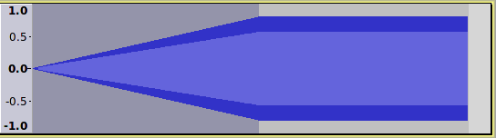
Exponential Fade
The Adjustable Fade effect has Exponential presets for fading in or out.
This is another very common fade type. Its popularity stems from the fact that it closely models the way in which sounds naturally decay. For example, comparing the waveform of a gunshot recording with that of a bell, we can clearly see that although the time scales are very different, the shape of the sound as it decays is very similar:
- 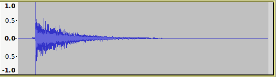
- 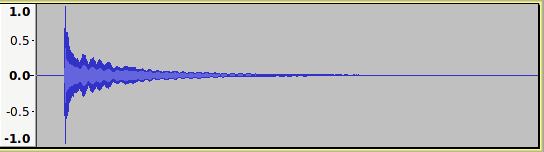
In Audacity, the Envelope Tool produces exponential fades.
A similar (but not identical) fade shape may be produced by applying a linear fade several times to the same selection. For example, here is a fade created by applying the Fade Out effect, then repeating it three times using the Ctrl + R shortcut (Repeat Last Effect).
- 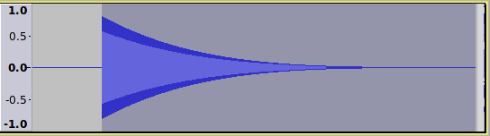
Exponential curves may also be used as a fade-in.
- 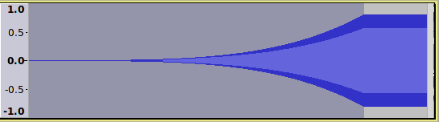
Logarithmic Fade
The Adjustable Fade effect has Logarithmic presets for fading in or out.
Essentially the same as an exponential fade, but curving the other way.
- 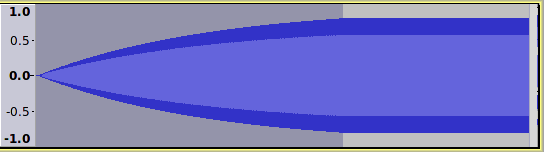
- 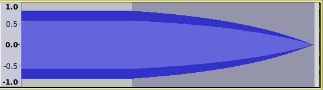
Equal Power Fade
If one sound is fading out while another sound is fading in, this is called a crossfade. A common problem when crossfading two sounds using linear fade effects is that the volume level may drop a little midway through the transition. To mitigate this problem it is common to use a fade shape that, compared to a linear fade, bows up in the middle, so that the volume level stays a little higher in the middle of the transition. One of the most commonly used crossfade shapes is an "Equal Power Fade"; so called because the average power (and hence loudness) remains fairly constant during a crossfade transition for music and other uncorrelated sounds. The next image shows two tracks, one with white noise and one with pink noise that are crossfading using Equal Power Fades.
- 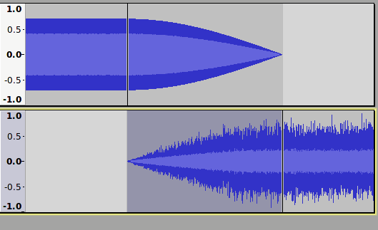
Sine Curve Fade
The "S-Curve" presets in the Adjustable Fade effect produce this type of fade.
A raised sine curve (or cosine curve) is based on the shape of a sine wave. This fade type is often used for fading out music as it produces a smoother, more musical sounding fade out than a linear fade. It is also sometimes used as an alternative to the Equal Power Fade for crossfading as it avoids the possibility of the peak level increasing during the crossfade (Like linear fades, it produces an "Equal Gain" crossfade).
- 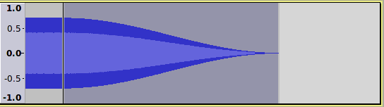
DJ Crossfade Curve
DJ Mixers have a crossfade slide control that is essentially two faders back to back in one unit. Moved in one direction it will fade in source A and fade out source B, and when moved to the other extreme it will fade out source A and fade in source B. Early DJ mixing desks crossfaders produced a (roughly) equal power crossfade, but in response to demand from DJs, other fade shapes were developed that have a more pronounced curve, thus making the mix more pronounced during the transition. More information about the history of DJ crossfaders can be found on the Rane website.
Modern DJ mixers provide a curve control to provide adjustment of the fade taper contour. This works in a similar manner to the Mid-fade adjust control in Audacity's Adjustable Fade effect. The image below compares the shapes of an equal power fade with a high curve fade that is similar to what would be achieved by setting the curve control fairly high on a DJ mixer's crossfader.
- 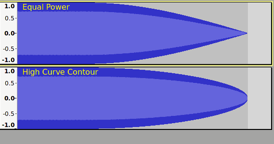
Adjustable Fade
This is a more sophisticated and advanced fade that offers you settings to control the shape of the fade.
It enables you to increase or reduce the audio volume by a varying amount. This effect is more versatile than Fade In and Fade Out in that it can fade to or from any amplification level rather than only between silence and the original level.
- 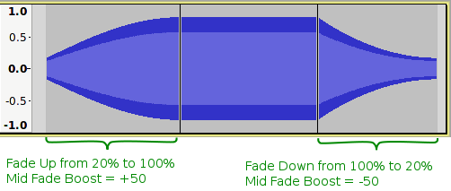
Creating Fades with the Envelope Tool
The main advantage of creating fades with the Envelope Tool is that it is non-destructive. The envelope may be changed or removed at any time with no loss to the audio data.
See this page for details of how to use the Envelope Tool to create a fade.
Creating a Crossfade
The purpose of a crossfade is to produce a smooth transition between two sections of audio. The two sections overlap and as one section fades out the other fades in. This technique is commonly used by DJ's, for "compilation" tracks and mashups. The use of crossfades is not limited to joining pieces of music, but can be used in many other situations where a smooth transition is required, including editing speech recordings, extending songs, creating loops for audio sequencers, repairing damaged recordings and much more.
There are two crossfade effects available in Audacity
- The first is a simple one which crossfades between two adjacent clips in the same track, see Crossfade Clips
- The second is a more precise tool that crossfades between two separate audio tracks. See the Crossfade Tracks effect. For detailed information and advanced techniques, see: Creating a Crossfade.
Examples
Example 1: Using a fade to remove a click from the start of a sound
If a sound starts suddenly, there will often be a noticeable click at the beginning. This is due to the waveform suddenly jumping from silence to the start of the waveform. This "jump" is often visible by zooming in closely on the start of the sound so you can see the original sample dots:
- 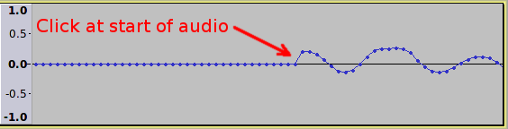
Applying a short, linear fade in can eliminate the click by smoothing the transition from silence to the start of the sound.
- 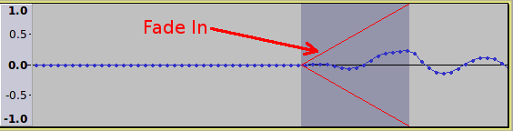
Example 2: Adding an extract of music to a presentation using fades
For presentations, whether you are using PowerPoint, OpenOffice Impress, a slide show for YouTube or any other audio-video presentation, it is often desirable to include audio clips within the presentation. Rather than simply cutting a recording to the required length, applying a fade in and fade out to the audio clip can add a touch of professionalism to the production.
The duration of the fade as well as the shape of the fade are crucial to the overall effect. Typically an audio clip will have a relatively short fade in and a longer fade out, but there are no hard and fast rules. Audacity allows you to experiment with different fade lengths. When preparing audio clips for use in your presentation you can export several versions with differing fade lengths, then when putting together the presentation, try your alternative versions and use whichever you most like.
Fading in music with an exponential shape fade is often very effective as you get a hint of the music first, then it rapidly fades to full volume. For fading out music, a sine curve fade often works well.
See also: MixingOther plug-ins and tools for fades
See this page for details of other plug-ins and tools for making fades. The page carries information on the following: